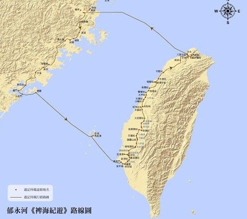
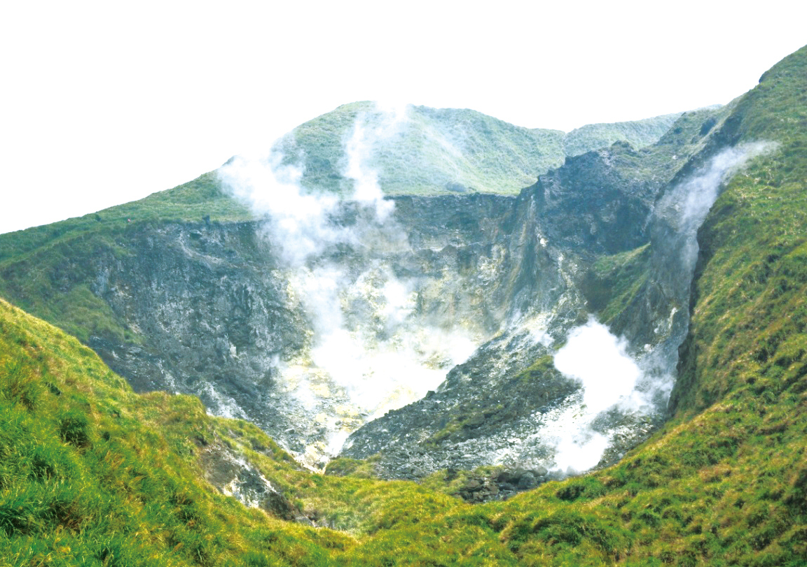
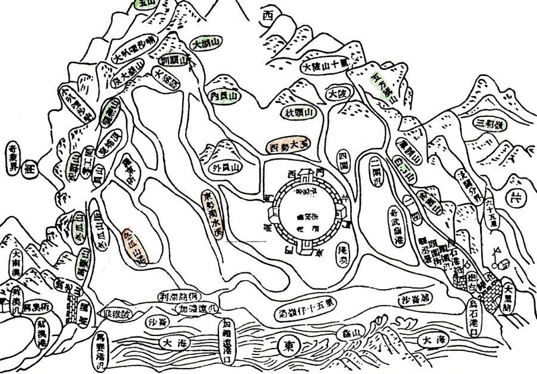
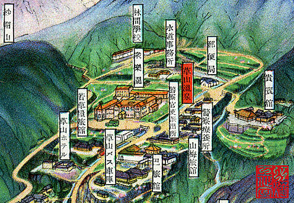
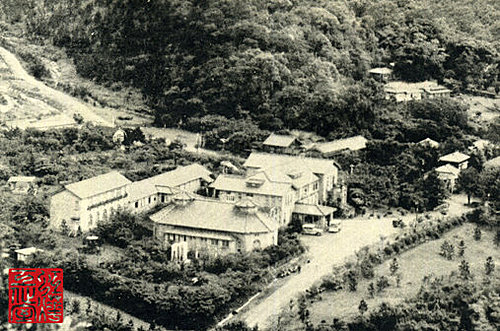
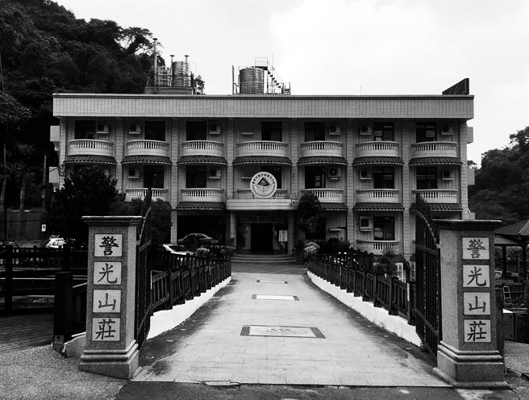
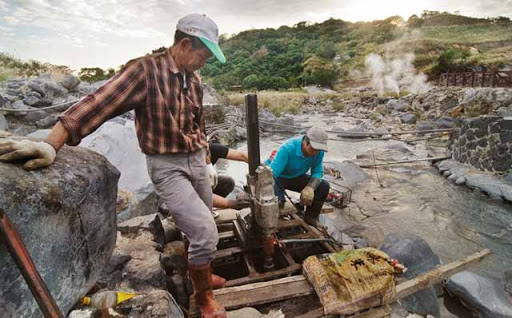
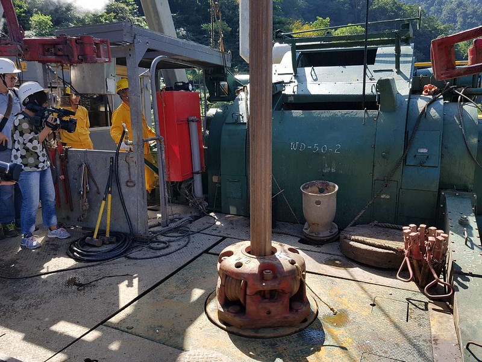
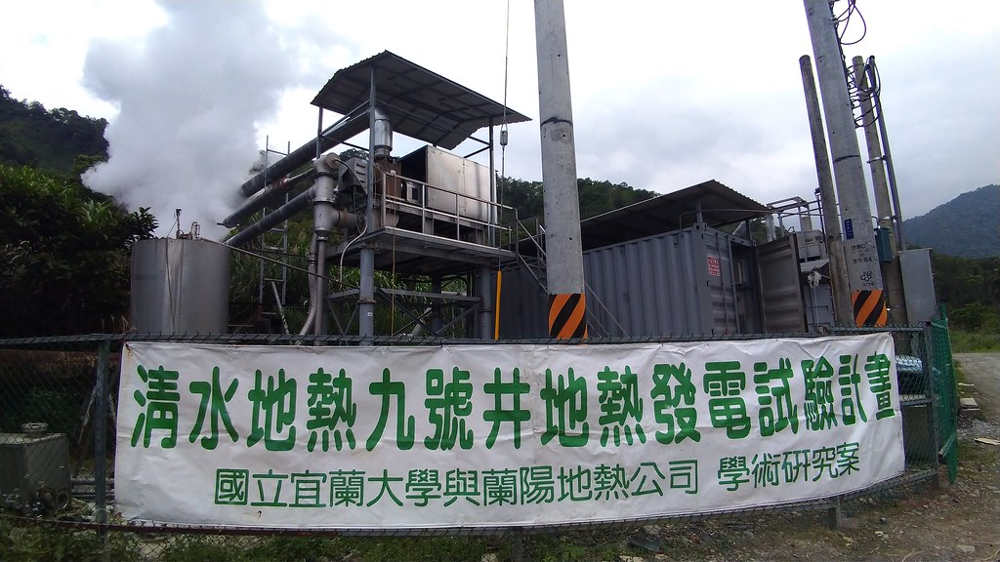
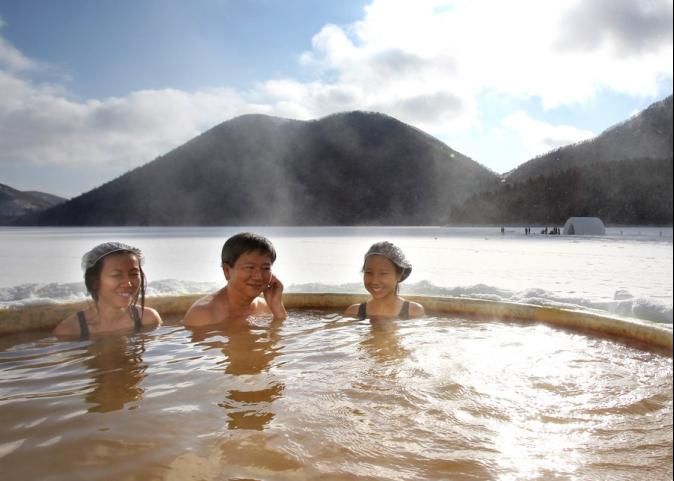

➤最早有記載台灣溫泉的文獻是清朝康熙36年（西元1697年）浙江仁和縣諸生郁永河所著的《裨海紀遊》。

➤當中描述了大屯火山群，這同時也是台灣第一件具備溫火山溫泉地質的記述："石作覽靛色，有沸泉，草色萎黃，無生意。山麓白氣謠，是為磺穴。穴中毒煙噴人，觸腦欲裂。"

➤清代已有溫泉浴的風俗。
1837年《噶瑪蘭廳志》提及今日的礁溪溫泉：「湯泉，在湯圍，廳治南四十里。遠望熱氣蒸騰，泉中若沸。附近田園多被泡傷。土人無冬夏，澡浴於此」

➤台灣主要的溫泉區都是在日治時期開發，由於溫泉(泡湯)是位處高緯度日本人主要的文化之一。

➤在統治台灣時期，積極開發各地的溫泉，作為當地警察的療養所。

➤例如由警政單位管理的「警光山莊」，即承襲日治時期的相關設施。

➤台灣溫泉的發展主要以地質研究和發電發展為目的
主要參與的單位包括美軍顧問團、台灣中油股份有限公司、聯合礦業研究所等

在1966年-1974年的陽明山馬槽溫泉區的研究中，由於無法克服地熱流體的強腐蝕性，而結束工作。

1973年之後，在中央山脈的探勘過程中，在宜蘭地區鑽鑿的井中，約450公尺，水溫可達150-230度，生產量10-100噸/時。

在1981年於清水建立地熱試驗發電場，最高發電量是2000千瓦，八年之後設備受到阻塞，發電量降至500千瓦，於1995年關閉。

台灣在1990年解嚴以後，受到各類媒體休閒娛樂旅遊節目影響，許多溫泉區紛紛引進日本溫泉的經營模式，強調溫泉的養生、健康、美容與休閒的功能，促使溫泉旅遊業快速發展。
為保障溫泉的開發利用與永續經營，《溫泉法》於2003年（民國92年）6月3日由立法院三讀通過。


 333桃園市龜山區德明路5號
333桃園市龜山區德明路5號 TEL:(03)1234-5678
TEL:(03)1234-5678 EMAIL:123456789@gmail.com
EMAIL:123456789@gmail.com